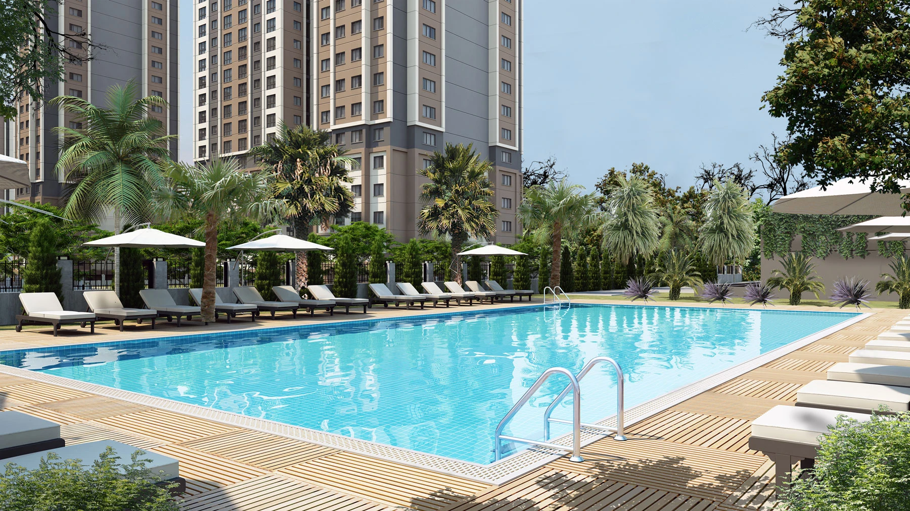

YücelPark Kartal
A residential development in central Kartal with landscaped grounds and shared outdoor spaces. The published design combines apartment buildings with gardens, leisure facilities and access to nearby parks.
Photo gallery

Official architectural illustrations; these images do not show the current construction condition.
Living spaces
The official presentation includes an outdoor pool, indoor and outdoor sports spaces, basketball court, sauna and steam room.
Kartal · Istanbul
Kartal, on Istanbul’s Asian side, along the minibüs road corridor. The official location presentation highlights nearby public transport stops and metro access.
Choose your home
Request the current apartment selection, price and payment options. Compare the exact unit, view and included services before arranging your purchase.